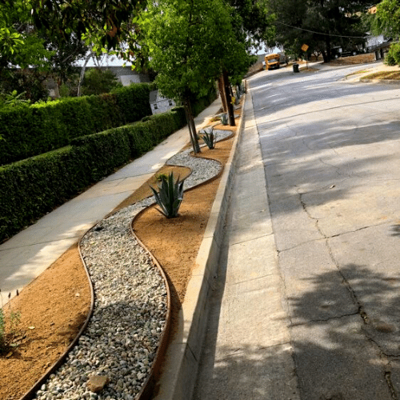
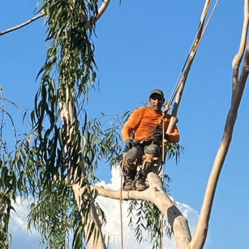
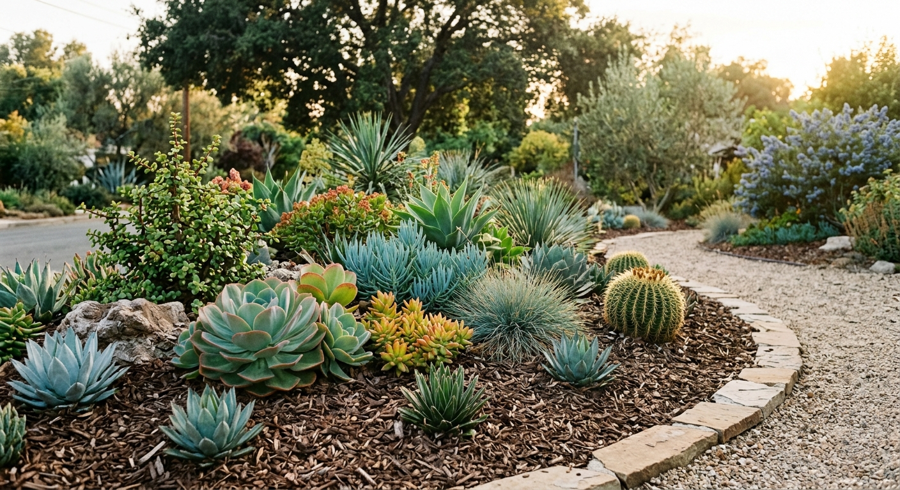
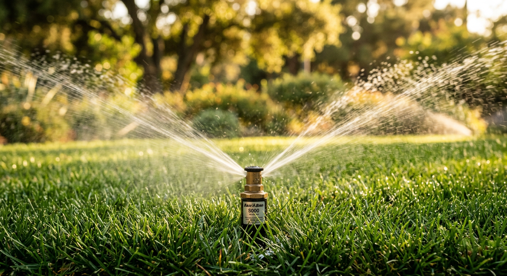
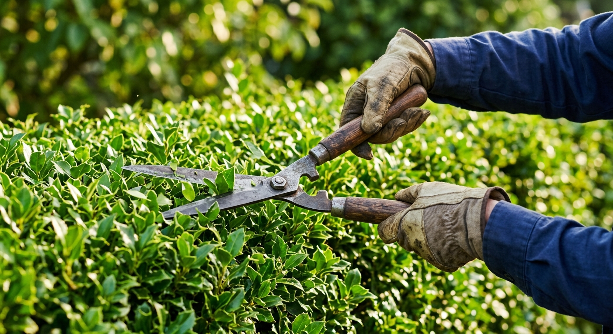

Lawn care
Mowing, edging, cleanup, and recurring yard maintenance for homes and commercial properties.
Pasadena lawn care, sprinkler repair, yard cleanup, tree work, and landscaping. English or Spanish, call Noe’s team and get a clear estimate.


Call for regular yard maintenance, sprinkler repair, cleanup, tree work, or a larger landscape project. The work can stay simple: walk the yard, price the job, get it handled.
Mowing, edging, cleanup, and recurring yard maintenance for homes and commercial properties.
Fix lawn and garden sprinkler systems before dry patches turn into a full yard problem.
Tree landscaping, trimming, pruning, and cleanup when the yard has gotten away from you.
Design, gravel, hardscape details, cement work, fence work, and drought-aware planting.
Google and HomeAdvisor reviewers name Noe, fair pricing, careful cleanup, and yards left in order.
“I really felt Noe cared about my yard overall, like I do.”
“Very professional. Landscaping results were excellent. Suggestions made were excellent and helpful. Costs were reasonable.”
“From trimming the edges of both front and back lawns, to cutting the lawns, blowing off the driveway and easement… everything was spic and span when they left.”
“Our sad front yard needed some attention and Noe gave a more than fair price for initial clean up and continued maintenance.”
See the kinds of yards they handle: garden beds, sprinkler issues, trimming, cleanup, and recurring maintenance.

Planting, rock, mulch, edging, and low-water curb appeal.

Sprinkler fixes for lawns and garden areas before the heat wins.

Trimming, cleanup, and recurring care that keeps the yard usable.